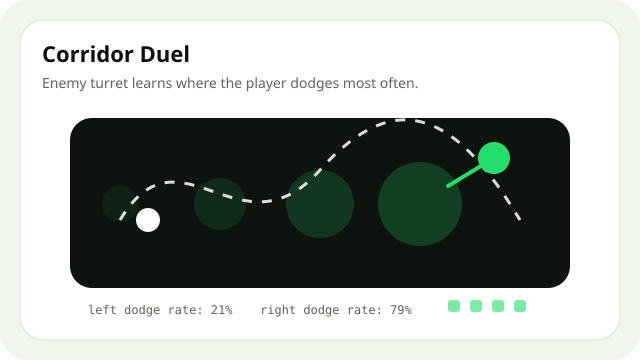

Mode A
- Turret следи къде dodge-вате.
- Learning: сменя aim, timing или позиция.
- Предавате playable build,
LEARNING_TRACE.md, replay/GIF.

Примерна посока: heatmap на dodge-овете и turret, който сменя aim pattern.
Mode B
300 LOC
Required
Learning trace
Видимо как enemy-то се променя.
Какво работи
- Добри идеи: heatmaps, n-gram prediction, Q-table, tiny perceptron.
- Не се брои: повече HP, fixed difficulty, random spikes.